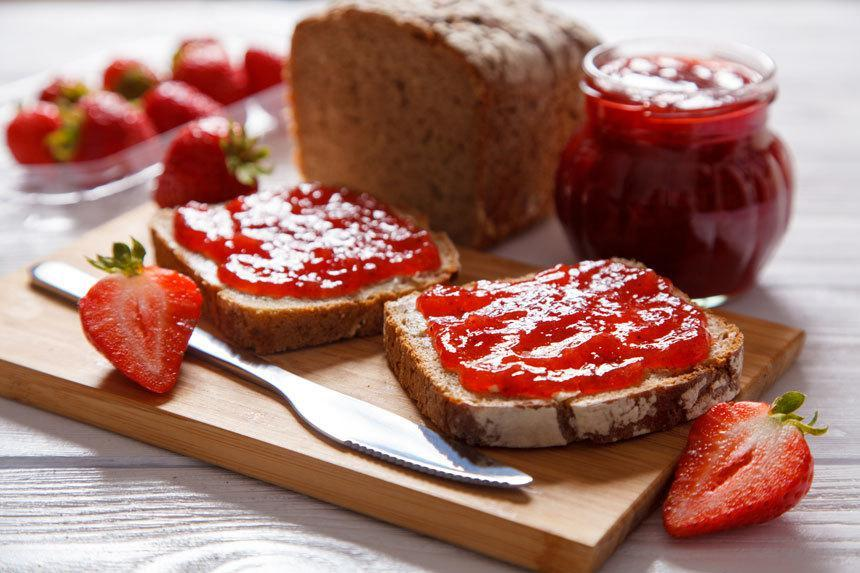
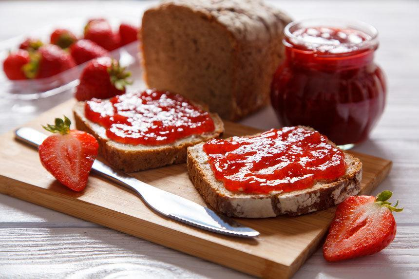
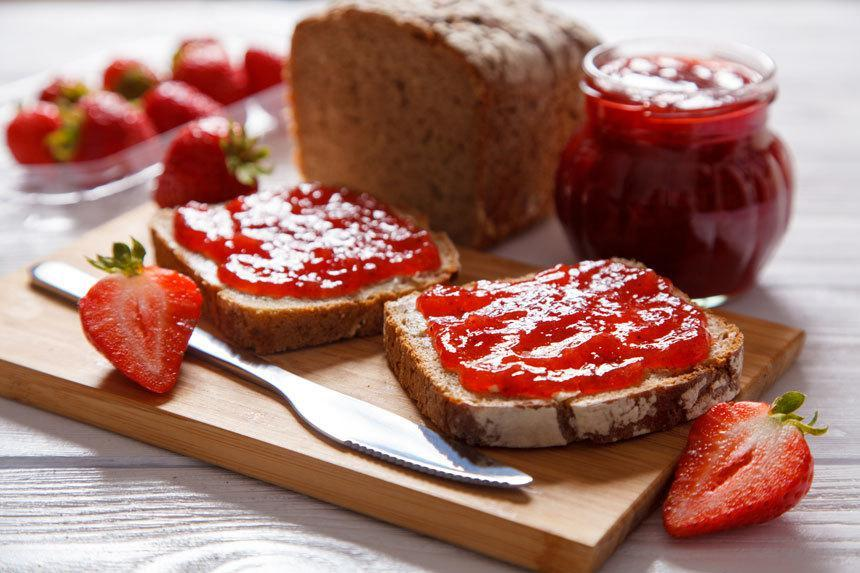

инструкция хлеб нужно засунуть в тостер и смачно его отжарить или же вы можете есть его не жареным но это будет не так эстэтично после чего легкими движениями руки намазать варенье и съесть Виды хлебушка Меню Хлебушек с шоколадом хлеб с вареньем хлебушек с вареньем 
хлеб нужно засунуть в тостер и смачно его отжарить или же вы можете есть его не жареным но это будет не так эстэтично после чего легкими движениями руки намазать варенье и съесть Виды хлебушка Меню Хлебушек с шоколадом хлеб с вареньем хлебушек с вареньем 
хлебушек с вареньем 